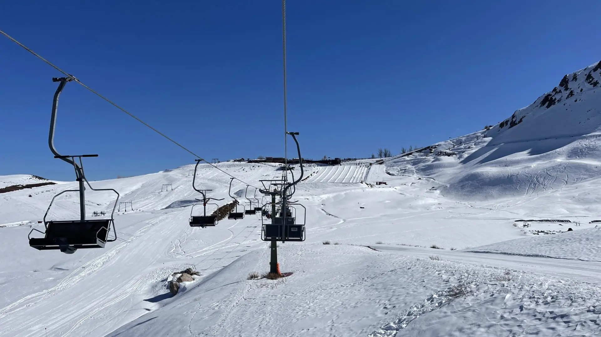
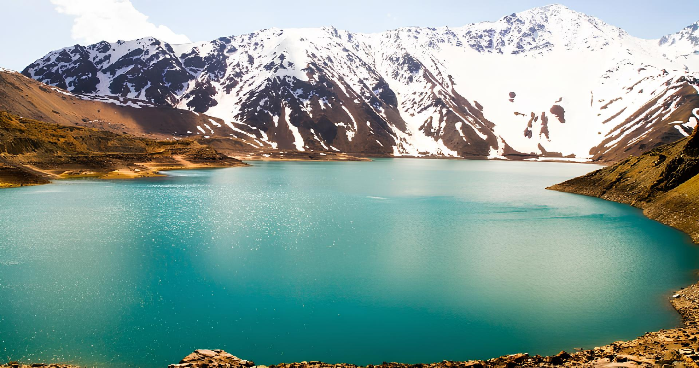
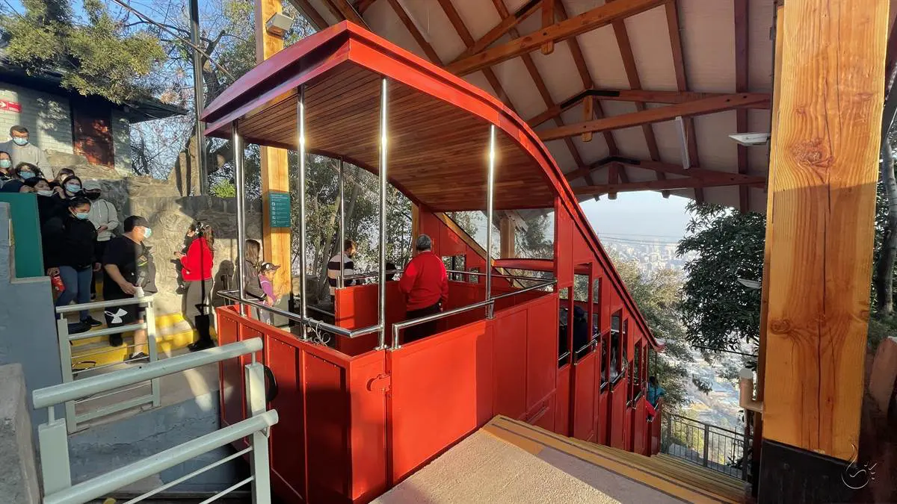

Santiago
Capital do chile, cidade moderna e aos pés dos andes
Santiago do Chile, a capital chilena, cidade moderna cheia de shoppings, ativididades, e atrações também na parte de ecoturismo, um lugar que vale muito a pena conhecer.
Dentre esses locais, podemos destacar:
Farellones

Um dos destinos mais conhecidos e cobiçados para visitação pelos turistas, Farellones é uma das pistas mais famosas de ski da região, tendo como ápice de sua atividade entre julho e setembro, podendo estender a temporada até para outubro, dependendo da precipitação de neve do período.
Cajón del maipo

Cajón del maipo, assim é chamado o maior reservatório de água doce de Santiago, responsável pelo abastecimento da água da cidade. Formada pelo degelo das montanhas próximas, na Cordilheira dos Andes.
Funicular

A miniferrovia mais famosa de Santiago do Chile, resposável por levar e trazer visitantes dos pés ao topo do morro San Critobál.
Centro histórico de Santiago

No centro histórico de Santiago, podemos ver construções com arquitetura belíssima de época, no centro da imagem, o edifício da bolsa de valores chilena. Alem dela, em outra vielas, é possível encontrar bares em construções de mesma arquitetura, trazendo um ambiente aconchegante e retrô.
Edifício Sky Costanera

No centro da imagem, o Edifício SkyCostanera, o maior edifícil da américa latina com o melhor rooftop para apreciar a vista da cidade e da cordilheira. Nas condições climáticas ideais, terá um dos melhores pores do sol do Chile.
Por fim existem muitos outros destinos, para saber mais, contate com um dos nosso consultores.